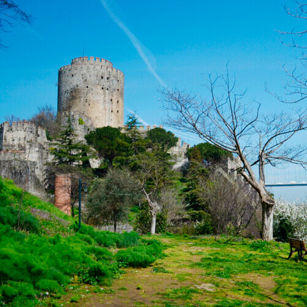

Крепость Анадолу Хисары


Anadolu Hisarı, 34810 Beykoz/İstanbul, Turkey
Освобождение Стамбула (Константинополя) от захвативших его византийцев, оборона Босфорского пролива – главная цель возведения крепости. Эта задача встала перед турецким падишахом Йылдырым Баязид, который с ней справился на отлично. Кроме того, крепость стала и центром заселения анатолийского побережья.
Следующие правители империи не оставили крепость без внимания, постоянно дополняя ее сооружениями и укрепляя. Вокруг выстраивали роскошные виллы и особняки, которые чувствовали себя защищенными под прикрытием оборонительного сооружения.